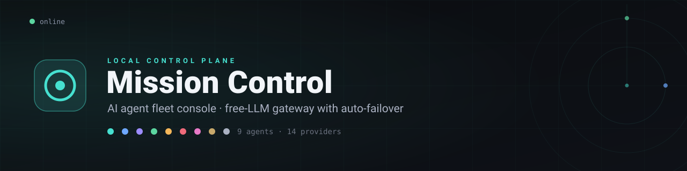

A single local dashboard that unifies your AI coding agents — with an OpenAI-compatible free-LLM gateway that cascades across providers, a 6-hour health monitor with auto-failover, and full observability. No database, no cloud.
It reads your agents' real configs, routes models, probes provider availability, and launches them — all from one dark, telemetry-driven control plane.
Detects which AI coding agents you have installed, their versions and sessions, with a per-agent control page, a shared Obsidian memory vault, and a team-meeting boardroom.
One OpenAI-compatible endpoint in front of every free provider. Point a tool at it and requests cascade across providers on rate-limits — so a single call rarely fails.
A 6-hour health monitor probes each provider; if an agent's free model drops, it's re-routed to a healthy one and reverted when it returns. Hands-off.
A live, time-ordered record of everything Mission Control does — settings, health sweeps, failovers, every gateway request — in its own tab.
Per-provider RPM/RPD/TPM/TPD counters with live limits (read from provider headers / OpenRouter credits), success rate, latency, and 24h/7d/30d analytics.
Runs on your machine — keys stay in your home folder (optionally encrypted at rest), nothing in the cloud. Reach it anywhere behind an authenticating tunnel.
Every agent ships on a free model. Add one no-card key and you're chatting.
Node 18.18+ and a modern browser. Runs on Windows, macOS, or Linux — x64 or ARM.
Then add one free key in Settings (Cloudflare / NIM / Groq / Cerebras need no card) and start chatting.